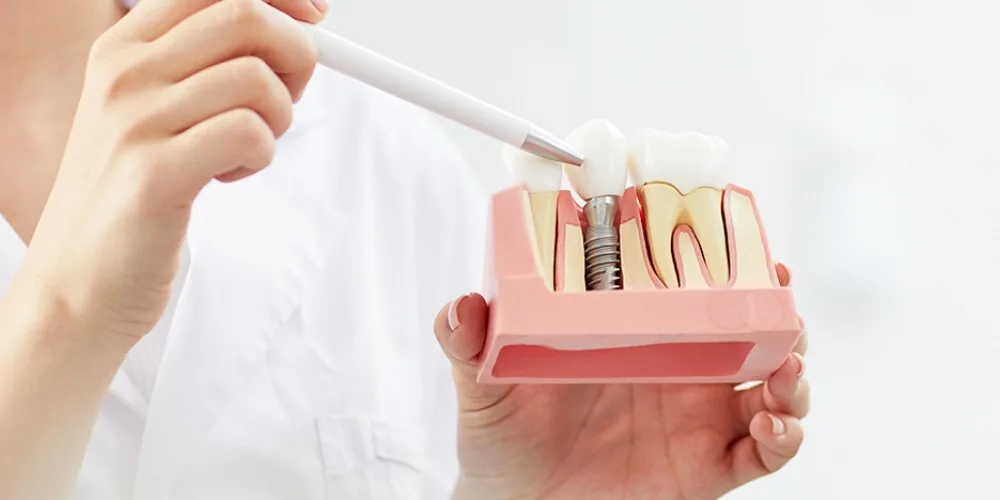

Implantati
Manjkajoče zobe nadomestimo z zobnimi vsadki, implantati.
Naročite se na pregled →
Ko izgubimo zobe na srečo ni konec vsega, danes zobe z visoko uspešnostjo nadomeščamo z zobnimi vsadki – implantati.
Estetika in zdravje z roko v roki krojita našo samozavest in dobro počutje, zato implantati oziroma zobni vsadki predstavljajo ključno rešitev za nadomeščanje manjkajočih zob.
Z zobnimi vsadki lahko pacientom povrnemo naraven izgled in funkcionalen ugriz, kar bistveno vpliva na kakovost njihovega življenja.
Implantati so ekonomična in manj invazivna možnost, še posebej pri izgubi posameznih zob, kjer alternativne metode (brušenje sosednjih zob za mostiček) niso zaželene.
Predvsem zaradi zahtev estetskega zobozdravstva s pridom uporabljamo implantate, za rehabilitacije z naravnim izgledom.
Kako poteka implantacija?
Implantacijo opravi oralni kirurg ali implantolog, pred posegom pa je potrebno opraviti vsaj panoramsko slikanje zob, v težjih primerih z manj kosti pa še 3D CT sliko.
V kolikor imate strah pred posegom, pri zobozdravniku občutite močno tesnobo, imate nizek prag bolečine ali zelo občutljive zobe, je v našem zobozdravstvenem centru na voljo inhalacijska sedacija, s katero ublažimo tesnobo ter zmanjšamo ali odpravimo bolečino. Več o sedaciji lahko preberete tukaj.
Kdo je primeren kandidat za implantat?
Implantati so idealna rešitev za skoraj vsakega odraslega, ki se sooča z izgubo enega ali več zob.
Ne glede na to, ali je izguba zoba posledica poškodbe, bolezni ali naravnega procesa staranja, zobni vsadki omogočajo trajno in estetsko privlačno rešitev.
Primernost kandidata za implantat pa je sicer odvisna od izpolnjevanja treh ključnih kriterijev:
Ocena realnega stanja v ustih, kjer implantolog primerja pacientove želje z dejanskimi možnostmi in predvidi potrebne posege za implantacijo.
Kirurška analiza splošnega zdravstvenega stanja, pri čemer mora pacient biti v dobri zdravstveni kondiciji, imeti zdravo čeljustno kost in biti brez vnetnih procesov (ciste ali granulomi).
Analiza pridobljenih informacij in morfologije čeljustne kosti za določitev števila in pozicije implantatov, pri čemer je potrebna minimalna višina kosti 7-9 mm in širina 4-6 mm. Dr. Robič je izurjen za minimalno invazivno implantološko oskrbo, tudi v primerih, ko čeljustne kosti ni dovolj za standardne postopke.
Če ste ali boste izgubili en zob
Ob izgubi enega ali več sprednjih zob, lahko takoj po odstranitvi zoba vstavimo implantat in ga oskrbimo s fiksno začasno zobno krono. Tako se lahko takoj vrnete nazaj v socialno življenje.
V primeru zadnjih zobe, ki niso vidni, pa pustimo implantat vraščati 6-8 tednov, nato pa sledi sken in izdelava nove keramične krone.
Če je potrebno dodati umetno kostnino ali pa je vaša kost slabše kvalitete, pa počakamo 8-12 tednov pred namestitvijo zobne krone na vsadek. V vmesnem času vam napravimo začasni provizorij.
Če ste ali boste izgubili več zob v vrsti
V tem primeru lahko na 2 implantata privijačimo mostiček z do 5 zobmi.
Na vsadkih lahko takoj naredimo začasen mostiček, ali pa jih pustimo celiti, ter jih čez 6-8 tednov nadgradimo s keramičnim mostičkom.
Kadar vaše kostne mase ni dovolj in je potrebno dvigovati sinusno dno – sinus lift, pa z obremenitvijo implantatov in izdelavo mostička počakamo 6 mesecev. V vmesnem obdobju vas lahko oskrbimo z začasno protezo.
- Če ste ali boste izgubili vse zobe v čeljusti
- Zgornja čeljust
Če je izguba zob v zgornji čeljusti potrebujete 4 vsadke.
Če želite fiksne zobe, vam lahko pomagamo z metodo All-on-4, kjer dobite zobe v 24 urah po izdrtju zob. Cena rešitve All-on-4 je 4.990 evrov + 2.500 evrov po približno 6 mesecih, ko naredimo končni mostiček iz zircon-oksidne keramike na 4 implantatih.
Kadar se zaradi starosti in lažjega čiščenja dogovorimo za snemni mostiček na Locator polzilih, pa najprej vstavimo implantate in nato po 2-3 mesecih izdelamo snemni mostiček – protezo, ki se pritrdi na implantate s klikom, vendar je prva 2 meseca ne smete polno obremenjevati.
Spodnja čeljust
Če pa nimate zob v spodnji čeljusti in želite fiksno rešitev pride v poštev tako kot zgoraj All on 4 ali pa snemna proteza na locatorjih.
Zaradi finančnih ali anatomskih omejitev pa se lahko v spodnji čeljusti izdela tudi protezo na dveh zobnih implantatih, ki se pritrdi na vsadke na klik. Cena za to možnost je 2.900 evrov z uporabo Locator polzil in s kovino ojačane proteze.
Prednosti implantatov
Največje prednosti zobnih vsadkov se kažejo v njihovi dolgi življenjski dobi, funkcionalnosti in estetskem izgledu.
Kot umetne korenine, ki se vrastejo neposredno v čeljustno kost, implantati za nadomestne zobe zagotavljajo stabilno osnovo. To preprečuje nadaljnjo atrofijo kosti, ki pogosto sledi izgubi naravnega zoba, in zagotavlja, da je nadomestni zob videti in deluje kot naraven zob.
Implantati so izdelani iz biokompatibilnih materialov, kar zmanjšuje tudi tveganje, da ga telo zavrne, in omogoča njegovo dolgo življenjsko dobo.
Poleg vsega tega se pozitivni rezultati implantacije kažejo še v:
Izboljšanem govoru – slabo prilegajoče se proteze lahko povzročijo zdrs zob, kar otežuje govor.
Lažjem prehranjevanje – implantati delujejo tako kot naravni zobje, zato omogočajo uživanje hrane brez bolečin in zdrsov morebitnih protez.
Izboljšanem zdravju ustne votline – implantati za podporo ne zahtevajo prilagajanja sosednjih zob, kar pomeni, da več naravnih zob ostane nedotaknjenih, to pa izboljšuje dolgoročno ustno zdravje.
Izboljšanem videzu – implantati zagotavljajo naraven izgled in občutek naravnih zob.
Slabosti in omejitve
Kot pri vseh posegih, tudi pri implantaciji obstaja tveganje za okužbe, poškodbe okoliških zob ali živcev ter, v redkih primerih, zavrnitev vsadka. Uspeh implantacije je odvisen od zadostne kostne gostote, kar pri nekaterih pacientih lahko predstavlja omejitev.
Zobni vsadki so inovativna in trajna rešitev za nadomeščanje manjkajočih zob, ki vrača funkcionalnost ter samozavest. Upoštevanje pooperativnih navodil za nego (počitek, izogibanje alkoholu, kajenju, prevelikim telesnim naporom in vožnji, nadalje pa temeljito čiščenje ustne votline ter redni letni pregledi pri zobozdravniku) so recept za uspeh in dolgo življenjsko dobo implantata.
Pogosta vprašanja
V primeru katerih težav lahko pomaga zobni vsadek?+
Zobni vsadki so odlična rešitev za izgubo enega ali več zob zaradi bolezni, poškodbe ali drugih vzrokov.
Kako obstojni so zobni vsadki?+
Z ustrezno nego in rednimi pregledi implantati zdržijo desetletja ali celo vse življenje.
Ali poseg boli?+
Z uporabo lokalne anestezije je postopek implantacije običajno brez bolečin in kasnejših oteklin in zapletov.
Ali lahko telo zavrne vsadke?+
Zavrnitve so zaradi biokompatibilnih materialov, ki se uporabljajo pri izdelavi vsadkov, redke.
Ali so kakšne starostne omejitve pri implantatih?+
Implantati so primerni za večino odraslih, pomembna pa sta predvsem zadostna kostna masa in splošno zdravje.
Kako dolgo se celijo rane po posegu?+
Celjenje traja od nekaj dni do nekaj tednov, odvisno od posameznika in obsega posega. Dr. Robič je vešč minimalno invazivnih posegov, tudi vstavitve implantatov brez rezanja in šivanja.
Imamo izkušnje, lahko vam pomagamo.
Za informativno ponudbo se naročite na neobvezujoč pregled.
Naročite se na pregled →Podobne storitve
Vse storitve →
Konzervativno in estetsko zobozdravstvo
Širok razpon preventivnega in estetskega zobozdravstva s poudarkom na estetiki.

All-on-4
Če ste ali boste v kratkem izgubili vse zobe, vam jih metoda All-on-4 povrne v enem dnevu.

Beljenje zob
Sedaj si lahko posvetlite zobe že s samo enim obiskom v naši ordinaciji.

Zobna protetika
Snemna in fiksna protetika. CAD-CAM polnokeramične prevleke, estetske luske, delne in totalne proteze.